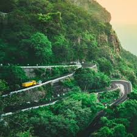
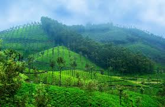

Let's Got To VALPARAI





4-Day Travel Schedule – Valparai
Day 1 – Arrival & Local Exploration
- Travel via Pollachi → Aliyar Dam → Hairpin bends scenic drive
- Stop at Aliyar Dam & Monkey Falls
- Check into hotel/homestay
- Evening walk in tea estates
Day 2 – Nature & Wildlife
- Sholayar Dam in the morning
- Nallamudi Viewpoint
- Indira Gandhi Wildlife Sanctuary / Anamalai Tiger Reserve
- Evening relaxation at stay
Day 3 – Waterfalls & Viewpoints
- Balaji Temple
- Birla Falls & Chinna Kallar Falls
- Grass Hills (with permission)
- Sunset at Loam’s View Point
Day 4 – Leisure & Return
- Morning walk in tea plantations
- Visit Tea Factory (if accessible)
- Local shopping (tea, coffee, honey)
- Return journey
Breakfast
- Idli with Coconut Chutney & Sambar
- Dosa with Tomato Chutney
- Pongal with Vada
Lunch
- South Indian Meals (Rice, Sambar, Rasam, Poriyal, Papad)
- Chicken Curry with Rice
- Fish Curry with Kerala-style Red Rice
Snacks
- Tea Estate Fresh Tea with Pakoras
- Bajji (Chilli, Onion, or Banana)
- Sundal (Chickpea snack)
Dinner
- Chapati with Kurma
- Parotta with Salna
- Lemon Rice / Tamarind Rice
Desserts & Drinks
- Payasam
- Filter Coffee
- Fresh Cardamom Tea from estates